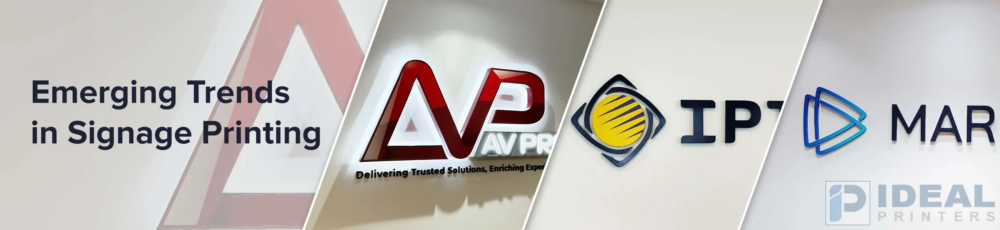

Emerging Trends in Signage Printing: Redefining Brand Visibility in Lahore

Signage in Lahore has evolved rapidly, and signage boards are now more important than ever in shaping how businesses communicate with their target audience. As the city embraces modernity, signage remains a powerful tool to boost brand visibility and leave lasting impressions. Lahore serves as a prime example of how businesses leverage innovative signage solutions to stay ahead of the competition in an ever-changing market.
2025 is here and with it comes a world of signage printing that is rapidly changing, transforming the way business communicates with its target market. With a city like Lahore as one of its epitomes, where modernity is the watchword, signage is still at the forefront to enhance brand visibility and make impressions count.
At Ideal Printers, we embrace these advancements to offer cutting-edge solutions that cater to the dynamic needs of businesses across Pakistan.
Top Signage Trends for 2025
-
Digital Integration in Signage
The rise of interactive and digital Signage is transforming customer experiences. From LED displays to touchscreen kiosks, businesses in Lahore are increasingly adopting digital solutions to engage their audience dynamically. These signs are perfect for retail spaces, malls, and high-traffic locations.
-
Eco-Friendly Materials
Sustainability continues to influence signage trends. In 2025, more businesses are choosing eco-friendly materials like recycled plastics and biodegradable substrates. At Ideal Printers, we offer green signage solutions to help companies align with global sustainability goals.
-
Minimalist Design Aesthetics
Sleek, clean designs are dominating. Businesses are moving towards minimalist signage that clearly conveys messages while having a sophisticated look. This trend is especially common in corporate offices and high-end retail outlets.
-
Personalized and Custom Signage
Customization is the key. A Signage board that is personalized to specific events, campaigns, or store themes helps businesses stand out. Whether it is a pop-up event or a seasonal sale, our custom signage solutions ensure your message resonates.
-
Smart Signage Technology
Smart technology is revolutionizing signage. With features like motion sensors and AI-powered displays, signs can now adapt to audience behavior in real time, delivering a personalized experience.
Why Signage Printing Is Crucial for Businesses in Lahore
The bustling streets of Lahore are lined with businesses competing for attention. High-quality signage printing ensures your brand doesn't just blend in but stands out. Here's why signage is indispensable in 2025:
Increased Footfall: Strategic signage can draw more customers to your storefront.
Enhanced Brand Recall: Memorable signage helps your brand stay top-of-mind.
Effective Communication: Signs are an efficient means of communication that can pass important messages, offers, or even directions.
Ideal Printers: Your Partner for 2025 Signage Trends
Being one of the prominent Signage companies in Lahore, Ideal Printers is ahead in these new trends. Here is how we can be of assistance:
- Holistic Signage Solutions: Be it Outdoor signage or digital displays, we have services that will address all your branding needs.
- Premium Quality Materials: Our signs are built to last, combining durability with impeccable design.
- Customization Expertise: We specialize in personalized signage tailored to your brand's unique requirements.
- Sustainability Commitment: Ideal Printers is proud to offer eco-friendly signage options, contributing to a greener Pakistan.
Signage Trends Shaping Brand Visibility in Lahore
In a competitive market, Ideal Printers has been helping businesses stand out by using the latest signage trends. From interactive displays with touchscreens and QR codes to the use of eco-friendly materials, businesses can now engage customers in exciting new ways.
LED and 3D signage are also growing in popularity, offering bold, attention-grabbing designs perfect for Lahore's vibrant environment. Plus, with durable, weather-resistant options, Ideal Printers ensures your signs stay vibrant, even in harsh conditions.
Embrace the future of branding with digital and augmented reality signage. Ideal Printers brings innovative, high-quality signage solutions to help your brand make a lasting impact.
Elevate Your Brand with Ideal Printers
The trends that shape signage companies in Pakistan are such that a company must always be ahead in the game to compete in a market. Ideal Printers gives you a trusted partner dedicated to delivering innovative, high-quality signage that aligns with 2025 trends.
Take your brand to the next level with cutting-edge signage solutions in Lahore and beyond. Contact Ideal Printers today.
This updated blog aligns with the request for a trend-focused approach while maintaining an emphasis on Ideal Printers as the exclusive signage provider. Let me know if you'd like further tweaks!
Contact Ideal Printers
We'd love to hear from you and help you bring your signage ideas to life! Reach out to us via the following:
- Phone: +92 42 3597 9285
- Email: idealprinter41@gmail.com
- Website: idealprinters.pk
- Office Location: G-2, Al-Rehman Centre, Shama Metro Station, 70-Ferozepur Road, Lahore
Let Ideal Printers be your trusted partner for all your signage needs in 2025. Contact us today to discuss your project!